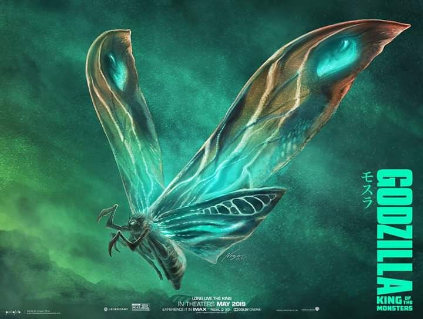

About Mothra

Mothra (モスラ Mosura?), also dubbed Titanus Mosura, is a giant lepidopteran daikaiju created by Legendary Pictures that
first appeared in the 2019 film, Godzilla: King of the Monsters. She returned in the sequel, Godzilla x Kong: The New Empire.
History
Mothra is first seen as a larva hatching from her egg after being closely monitored by Monarch for years. She becomes agitated
when Monarch operatives fire electrical pulses at her and spits silk at them in defense, as well as flattening them with her
massive bulk and using her mandibles to throw one of them into a giant spiderweb. The Monarch scientists almost attempt to
terminate her before she can destroy the facility, but Dr. Emma Russell manages to calm Mothra down using the ORCA device
(after some trial and error with the device which briefly enrages Mothra further). Now more relaxed, Mothra leans close
towards Dr. Russell and her daughter, Madison, and almost allows them to touch her. Seconds later, Alan Jonah and his
eco-terrorist mercenaries attack the facility, killing all the Monarch personnel in sight except for Emma and Madison,
who depart with them. Mothra meanwhile escapes the facility and travels to a waterfall, where she cocoons herself.
Sometime later, Mothra senses the reawakened Ghidorah's takeover upon Godzilla's departure, and she promptly speeds up her
metamorphosis to counter the threat[16] She hatches from her cocoon in adult form and spreads her wings for the first time
as Monarch staff including Drs. Houston Brooks and Ling Chen (the latter being a descendant of Mothra's priestesses) behold
her. Mothra takes flight to Castle Bravo, her presence combating and dispelling Ghidorah's spreading stormclouds, and her
presence assists Monarch in discovering that Godzilla is regenerating after he was left near death by the Oxygen Destroyer
and locating the underwater Vile Vortex that leads to Godzilla's resting place and then she laid her egg off screen then.
Mothra travels to Boston and assists Godzilla in his re-match against Ghidorah. She spits silk at Ghidorah, pinning him to the side
of a building and allowing Godzilla to brutally ram him through. Before she can further assist her alpha, Rodan appears and
intercepts her, slamming her into a building and keeping her occupied fighting him in a fierce aerial battle so that she
can't intervene in Godzilla and Ghidorah's fight.
Personality
Mothra appears to be a particularly intelligent and loyal Titan: unlike the other Titans, she defies King Ghidorah after the
latter has usurped Godzilla's position as alpha in favor of remaining loyal to Godzilla and immediately seeks him out, and
her flight against Ghidorah in a weakened state (which led to her death and also to her remains allowed Godzilla to defeat
Ghidorah) implies she has a concept of and capacity to commit self-sacrifice. It's also implied in the novelization that
Mothra, when she was hovering above Castle Bravo before the humans' expedition to revive Godzilla set off, intentionally
led the submarine to the underwater Vile Vortex leading to Godzilla's resting place so they could revive him, indicating an
ability to understand complex concepts such as common goals and needs.
in stark contrast to Ghidorah, Mothra, true to
her association with life, is by far the most benevolent Titan yet seen and is highly gentle towards humans when not
provoked. She shows mild curiosity to find herself confronted by Monarch personnel upon hatching from her egg and cocoon
respectively, and she leans her head towards Madison Russell close enough for the latter to touch after being calmed by the
ORCA. In her earlier encounter with Monarch, Mothra only became warier after their failed attempt to use a containment field
on her (which she observed killing several of the flying insects that were drawn to her), and she only attacked outright
after one of the humans fired on her with a stun gun. Even then, Mothra went out of her way to dispatch the humans present
in non-fatal ways (demonstrated most prominently when she grabbed one of the fleeing guards in her mandibles, and instead
of crushing or devouring him proceeded to throw him into a Giant Spider's web, which immobilized him and cushioned his
impact); and in her aggressive state, she still allowed a submissive Emma Russell to cautiously approach her with the ORCA.
Even when defending herself against Rodan, Mothra was somewhat less aggressive than her opponent, and she dispatched him
in an ultimately non-fatal manner.
Design
Mothra's egg was fleshy rather than hard, and appeared to be coated in vine-like structures which fell away during Mothra's
birth (whether these were a part of the egg or due to Mothra's life-attracting influence is unknown). When metamorphosing,
her chrysalis (from what little was seen of it through the waterfall) appeared to resemble a gigantic version of a moth
chrysalis with a long and slender shape, producing bright and flashing bioluminescent lights which highlighted blue- and
yellow-seeming segments.
Her larval form is much more insectoid in appearance compared to other incarnations; possessing
a vaguely armadillo-like segmented back, double-jointed and somewhat caterpillar-like legs, and three arthropod-like
mandibles and teeth, as opposed to past incarnations which only possessed two mandibles. Her back-segments can shift and
vibrate slightly with her emotion when she's aggravated. Her head is somewhat round with beady, surprisingly vertebrate-like
blue eyes. She prominently produces a bioluminescent glow from under her skin - this glow is normally colored bright-blue,
but she changes color to red when provoked to aggression.
Mothra's imago form overall bore a resemblance to a gigantic
moth; with a hair-lined body consisting of numerous colors, feathery antennae ('varied-antennae'), and four large wings which
sweep or drag behind her body when they're not extended. Her wings are patterned with black, orange, yellow and blue colors
and possess prominent eye patterns (akin to her Showa, Heisei and Godzilla: Tokyo S.O.S. designs). When her wings are
bioluminescent, they glow with a series of brilliant colors. Her wings are also much longer and narrower in proportion to
the rest of her body than in most incarnations.